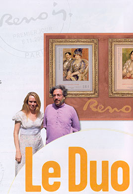
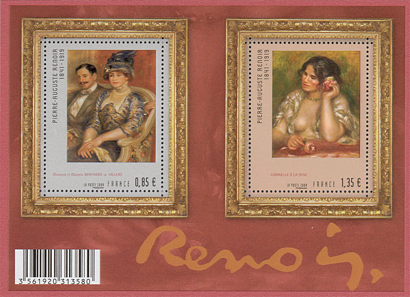
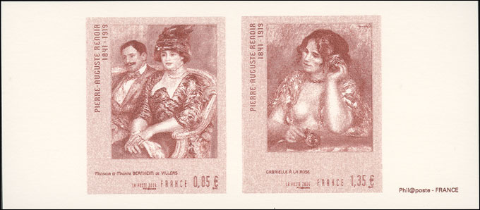
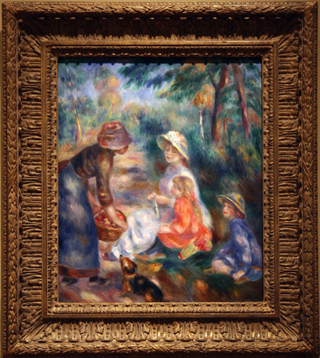
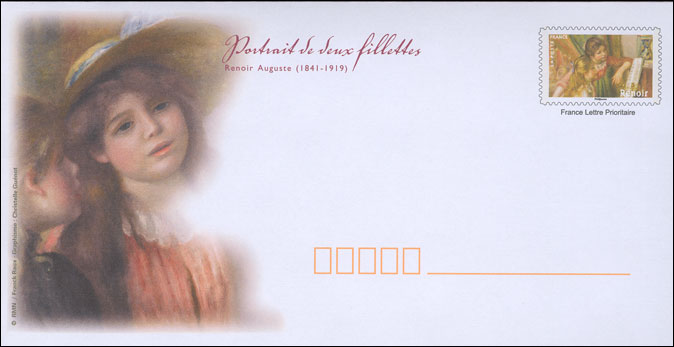
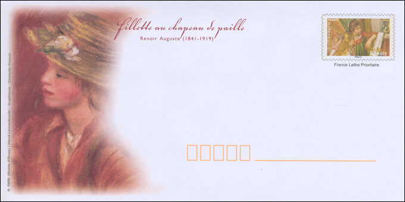
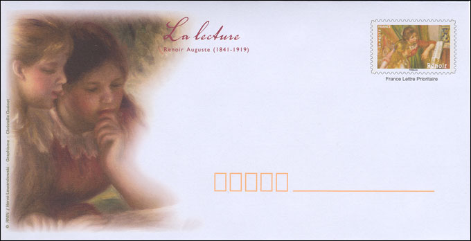
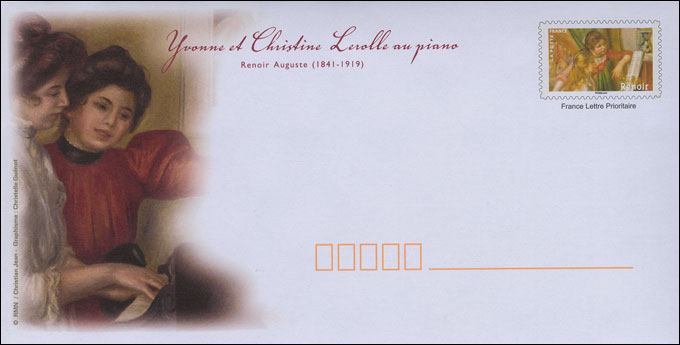
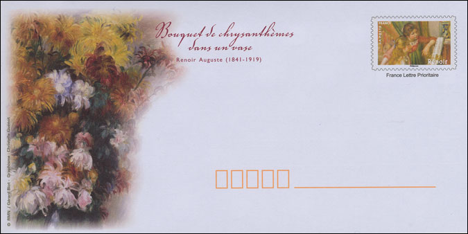

Created:
23.11.09. Revised: 24.11.09.
Copyright © 2009 by Victor Manta, Switzerland. All rights reserved in all countries. |
|
90th Death Anniversary
Bloc artistique
The French Postal Administration surprised us very positively with a really big (143 x 105 mm) "Artistic miniature sheet", issued the 5th of November 2009 and dedicated to the 90th death anniversary of one of the most popular French painters, Pierre August Renoir (1841 - 1919).
The Miniature Sheet (MS) was designed by Sylvie Patte and Tanguy Besset, both educated at l'École nationale des Beaux-Arts. From a short interview published in the catalogue Phil@poste (Sept. - Nov. 2009) we learn that they researched a lot for a better knowledge about the painter, his characters, their relationship, the objects, materials and colors that speak about him.
The designers' work is characterized by a deep osmosis between the text and the image.
From a biography written by the son of the artist the designers learned that Renoir wanted for his paintings rich and opulent frames, the reason why they integrated this important element in their philatelic work.
Concerning artist's signature, which is beautiful, it was integrated too in the MS, in order to give a very actual resonance to both paintings.

Looking attentively at the image of the MS, we can appreciate the fact that both designers achieved their goals, enriching this way our collections with a nice piece of philatelic art.

The importance of both frames cannot be underestimated, giving the whole work some richness and focusing the look toward the characters of the paintings, whose originals are exhibited at the Musée d’Orsay in Paris.
As usually an engraved sheet that displays both stamps was also issued by La Poste.

Just to underline the importance of the frame for the presentation of a painting, I have chosen another work of Renoir, originated in my my collection of photographs, that I recently taken at the Art Museum of Cleveland.

"The Apple Seller" was painted in 1890, the year when Renoir leaved, after a quite long collaboration, the group of Impressionists.
Simultaneously with the above MS, the French Post issued a wonderful set of 8 postal stationeries, that depict highlights from the works of Renoir. These pieces, with permanent validity, cover the postal expenses for letters sent in France, Monaco and Andorra. We show below an excerpt of these very interesting pieces of philatelic art.

Portrait of Two Girls

Girl with a Straw Hat

The Reading

Yvonne and Christine Lerolle at Piano

Bouquet of Flowers in a Vase
Even if accomplished, the MS cannot be exempted from some criticism. The choice of two identical frames for both paintings looks somehow like a "cheap" solution for something that should have enriched the whole. Even if I can perfectly understand the necessity of the bar code on the MS, its presence reduces considerably the visual impact of this philatelic work of art.
Links on this site:
- Renoir
- Renoir at Hermitage Museum, St. Petersburg
- Mlle d'Anvers
Created:
23.11.09. Revised: 24.11.09.
Copyright © 2009 by Victor Manta, Switzerland. All rights reserved in all countries. |
|